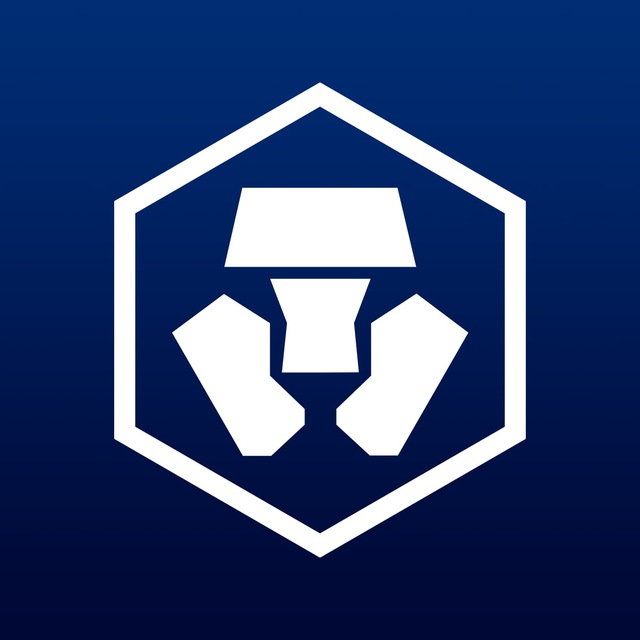

Chacha Zhou(周伟)
Freelancer / Senior Software Engineer
8 Years Experience / College Degree / 30 Years Old
13798247501 chachazw@gmail.com
Over 8 years of front-end experience, and developed many projects during this time, including React and Vue web app, Blockchain Web3 dapp, Solidity smart contract, React-Native app, WeChat mini-program, Flutter cross-platform hybrid app, and also have some Nodejs experience, and as a team leader of 10 members before.
-
2022.05-2023-01
Crypto.com - Foris Technology (Shenzhen) Limited. ／ Exchange TeamSenior Software Engineer
React Vue3 CI/CD Typescript1. As a senior software engineer in a large front-end team, responsible for the crypto.com Exchange core features development, including security dashboard, affiliate dashboard, etc.
2. Integrate Yubikey web authn to Exchange security dashboard with backend developers, and add Yubikey bridges for Android and iOS platform, improve web and app security.
3. Integrate components to UI component library X-UI, and develop UI developer tools to facilitate development and debugging, add Jest unit jest to UI components and improve test coverage.
4. Responsible for CI/CD for our Exchange and Yubikey project, integrate Circle CI and Github actions to our Exchange Vue3 migration project.
5. Responsible for technology architecture of Vue3 migration project, bring monorepo best practise and develop playground developer tools for Exchange Vue3 migration project and improve page development efficiency.
-
2019.01-2022.04
Candela (Shenzhen) Technology Innovation Co. Ltd. ／ R&D departmentFront-end Team Leader
React Vue Gatsby Flutter Dart Typescript1. As the leader of the large front-end technical team, responsible for the project management and R&D of the web, mobile HTML5, mini-program and Flutter App, responsible for the mobile cross-platform technology R&D and project management, engineering and automatic deployment, technology selection and technology challenge.
2. Team management, task arrangement and scheduling, follow up front-end project development progress, improve front-end workflow and product experience, participate in product requirements, interaction and design discussions, and formulate suitable solutions.
3. Team building, regularly hold technical sharing within the team, create a cultural atmosphere of engineers, regular team technical training, improve team technical level and R&D ability.
4. Responsible for visual monitoring of front-end large-screen robots, video monitoring and remote control of robots, as well as architecture design and technology research and development of visual graphics editing tools, and develop visual applications using D3, fabricJS, ThreeJS, and other frameworks.
5. Responsible for the cross-platform technology architecture design of native iOS and Android apps and Flutter, combined with native technology and Flutter cross-platform technology hybrid development, to solve the problem of multiple-end reuse of a set of codes.
-
2018.08-2019.01
OlympusLabs ／ R&D departmentFront-end Developer
React Typescript Web3.js Redux1. Responsible for Web3 dapp and DeFi SDK development, connect front-end with ethereum smart contract and imToken wallet.
2. Develop Olympus Portal project which is a DeFi derivatives management system, improve front-end user experience and performance.
3. Connect dapp with Metamask and build user wallet account and transactions data visualization.
4. Improve front-end workflow and web app experience, participate in product requirements, interaction and design discussions, and formulate suitable solutions.
-
2017.06-2018.8
 Plum Flower International LLC ／ R&D department
Plum Flower International LLC ／ R&D departmentFront-end Team Leader
React Flow Jest NextJS Javascript1. Served as the technical leader of a 7-person front-end development team from all over the world, responsible for front-end project technology research and development.
2. Team management, task arrangement and scheduling, follow up front-end project development progress, improve technical documentation.
3. Responsible for front-end performance optimization, front-end architecture design and technology selection, front-end engineering and automatic deployment of large-scale US municipal projects.
4. Improve front-end workflow and product experience, participate in product requirements, interaction and design discussions, and formulate suitable solutions.
-
2016.08-2017.06
 ForChange LLC ／ R&D department
ForChange LLC ／ R&D departmentFront-end Developer
Vue VueX Node.js Javascript1. As a core member of the technical team, responsible for the front-end development technology selection, technical architecture, the front-end page refactoring, and implementation of interactive logic and create some amazing animations, data processing of the front-end, and develop progressive front-end page.
2. Use Express Nodejs framework as the middle layer to develop the front-end data interface, use Vue front-end framework to develop the book management system SPA, use Vuex as the data state management tool, use Gulp and Webpack to package and compress project files, and front-end development CI/CD.
3. Responsible for the front-end development of millions of user-level products, formulate product release processes and code specifications, and design WeChat WebApp multi-page project architecture and workflow.
-
Crypto.com Exchange
2022.05-2023.01
Crypto.com Exchange is a large cryptocurrency exchange which is developed with Vue2 and Vue3 frameworks, and with over 70 million users worldwide.
1. Develop front-end features with Vue2 and Vue3 frameworks, develop UI components and add Jest unit tests, fix browser compatibility issues.
2. Integrate Circle CI and Github Actions to CI/CD workflow, integrate Javascript error monitoring tool to front-end system.
3. Responsible for Vue3 migration architecture design, explore multi-page and single-page application engineering development, and improve project maintainability and scalability.
4. Apply and config AWS infrastructure resources, optimize project deployment workflow, and improve deployment efficiency.
-
Large Scale Business Management Platform
2019.02-2022.4
The business management platform is a large-scale background management system for the robot industry, which integrates express delivery business, takeaway delivery business, and robot monitoring delivery business.
1. Use React and Typescript stack to build the basic technical architecture of the background management system from scratch, create front-end development, UI component library, Jest unit testing and Git Workflow specifications.
2. Responsible for the technology research and development of related core modules of the business management platform, including large-screen data monitoring, real-time robot monitoring based on Websocket, and use D3 and e-chart to build robot data visualization.
-
Post Warehouse Management Flutter App
2020.08-2021.10
Post Warehouse Management is a cross-platform mobile enterprise business management application developed with Flutter. The main core businesses include device management, scanning code pickup, order management, etc. It is a robotic intelligent business management application.
1. Build the basic technical architecture of Flutter and develop the core business logic.
2. Developed Flutter component modules, including cti_services, cti_widgets, cti_utils and other common component modules.
3. Introducing Redux state management mechanism to Flutter applications.
4. Responsible for handling Android and iOS cross-platform compatibility issues.
-
OlympusLabs Dapp and DeFi SDK
2018.08-2019.01
Olympus Labs is building a protocol for developing tokenized cryptocurrency financial products such as indices, funds, lending products, futures, options, and more. The Olympus Protocol in turn powers an ecosystem of cryptocurrency fintech DApps.
1. Build the basic technical architecture, and introduce React, React Native, Redux and Webpack to dapp and app development.
2. Use web3.js to build DeFi features, and develop Staking, Swap and Derivatives features.
3. Connect Metamask and imToken wallet to dapp and improve dapp user experience.
4. Use Typescript to build DeFi SDK for developers, add interfaces and connectors for OlympusLabs Protocol.
5. Responsible for handling cross-browser compatibility issues.
-
Eco Web App
2017.06-2018.09
EcoAppPro is the new standard for urban utility management software and is an efficient and modern mobile GIS integration system. The project is a responsive large-scale integrated front-end project developed using the react technology stack, including Communications, User Center, Assets, System Manager, Personnel, and Logbook.
1. As the head of front-end technology, design and build the front-end technology infrastructure, lead 5 front-end members to develop collaboratively, and formulate reasonable development tasks.
2. Write relatively common front-end development standards, assign tasks to team members on Jira, review codes, and control the progress of front-end development to achieve agile project development.
3. The technology stacks used in the project include React, Redux, React-router, Recompose, Redux-saga, Flow and Semantic-ui-react, etc., and use the above technology stacks to build a stable and efficient front-end technology architecture, design and develop reusable front-end foundations components.
4. Develop fetch-based HTTP asynchronous request service, load server-side data asynchronously, process and cache complex data, and solve CORS cross domain requests.
5. Use Webpack to achieve a series of engineering development, including compression and packaging of front-end resource files, generation and merging of front-end CSS style files, front-end JS code segmentation and asynchronous loading, and use CDN caching services to improve the performance and experience of the web app.
6. Use Jest testing tool to build a front-end testing environment and write complete unit test cases for React components to improve components quality and test coverage.
-
2021-Currently
Shenzhen UniversityBachelor Degree / Computer Science and Applications
-
2013-2016
Shenzhen PolytechnicCollege Degree / Communication Technology
-
CET-6 / Fluent
English
-
 http://github.com/chachaxw
http://github.com/chachaxw
-
 https://twitter.com/ChachaChou18
https://twitter.com/ChachaChou18